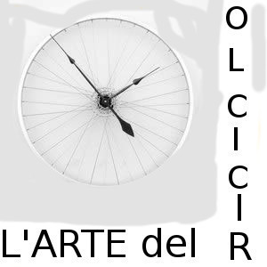
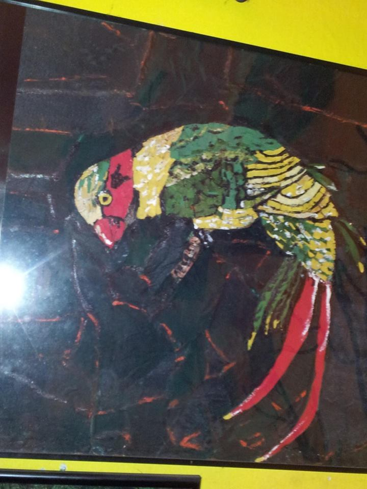
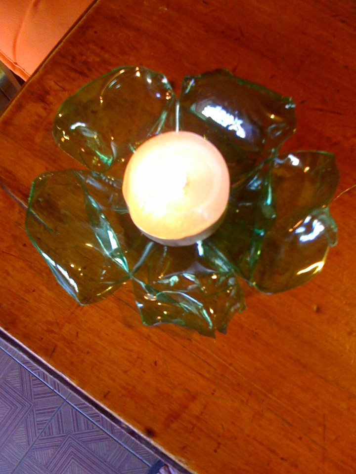
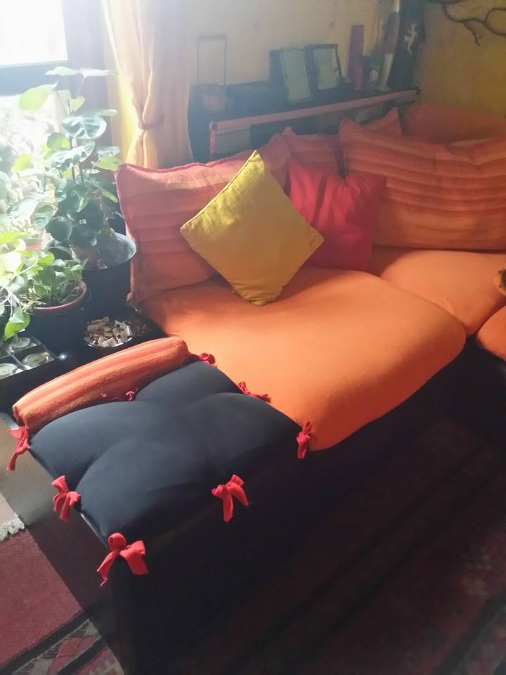
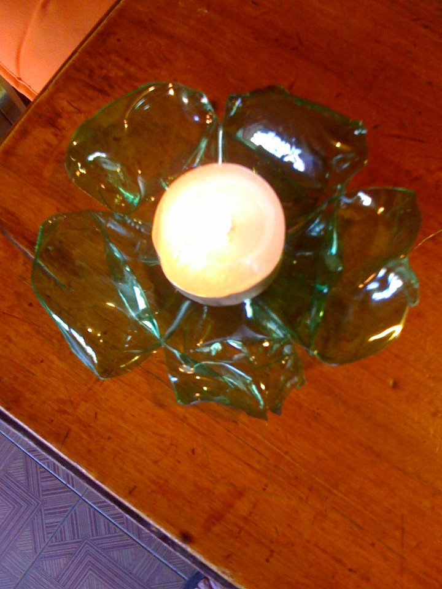
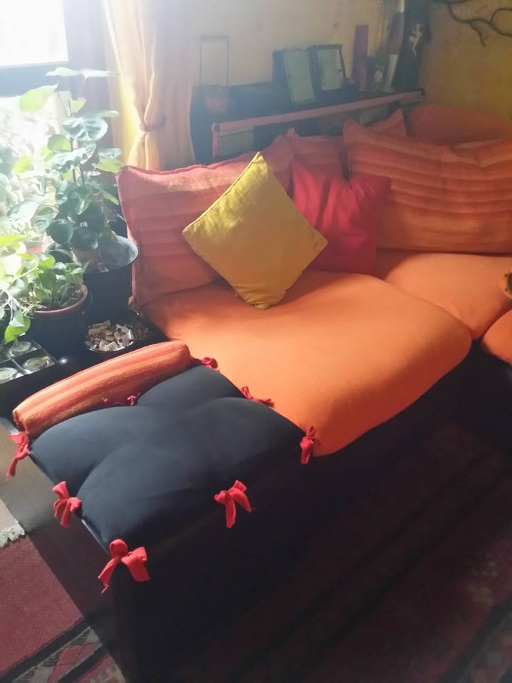
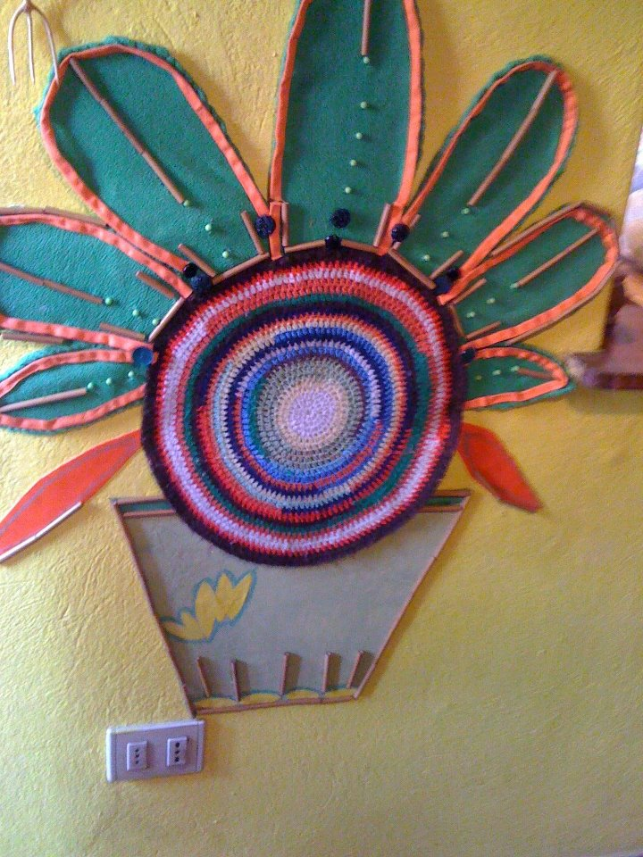
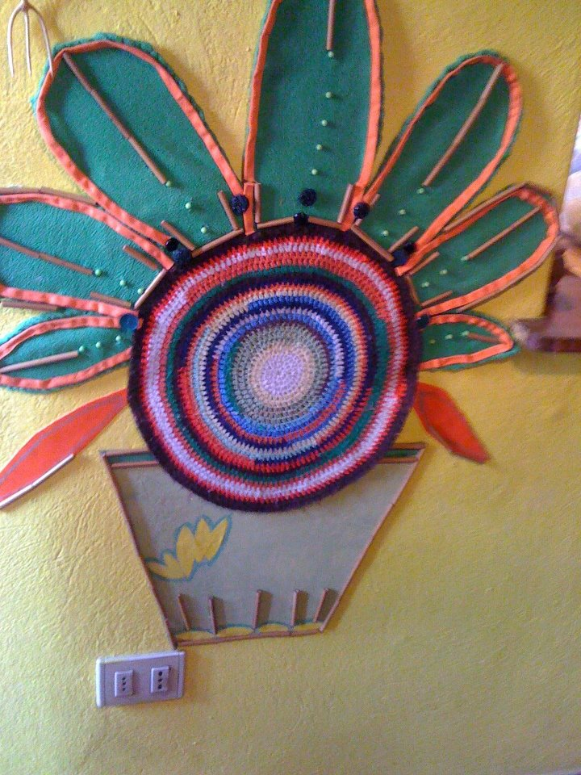

Una filosofia di vita
Da qualche anno si parla di riciclo, ecocompatibilità, riciclo di rifiuti, insomma! in definitiva si parla di EVITARE gli SPRECHI. Questo concetto è stato ben chiaro in me ancor prima che fosse diventata "quasi" una moda. Capisco che il conservare tutto possa diventare quasi un disturbo compulsivo ma non credo sia il mio caso. Anche io butto ciò che non serve a nulla conservare ma, prima di farlo, cerco di immaginare se ciò che stò per buttare possa essere utile a creare qualcos'altro. Negli anni questo mio modo di vedere è diventata una filosofia. Sempre di più il consumismo ci porta all'usa e getta, e così se un mobile, un pezzo di legno o qualsiasi oggetto, sono rotti, vengono buttati per comprarne di nuovi! Io questo lo considero un vero spreco, certo non nego che non tutti hanno la fantasia e la manualità necessarie per immaginare cosa possano diventare oggetti a prima vista inutili, per mia fortuna io quella fantasia ce l'ho e cerco di metterla a frutto. Con questa pagina voglio sensibilizzare chi legge a pensarci due volte prima di buttare.
Alcuni esempi di riciclo creativo



 




 
